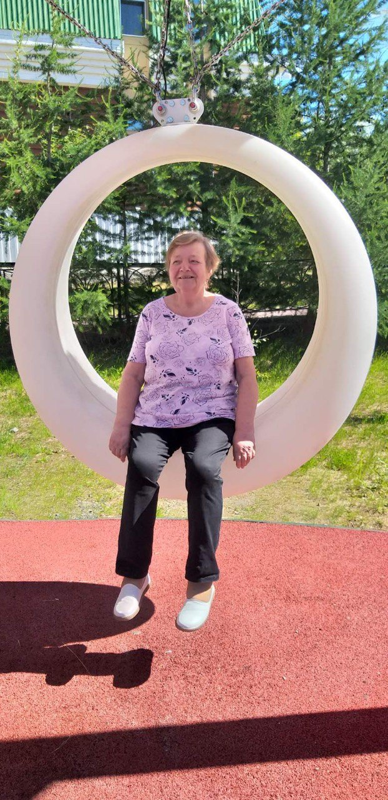
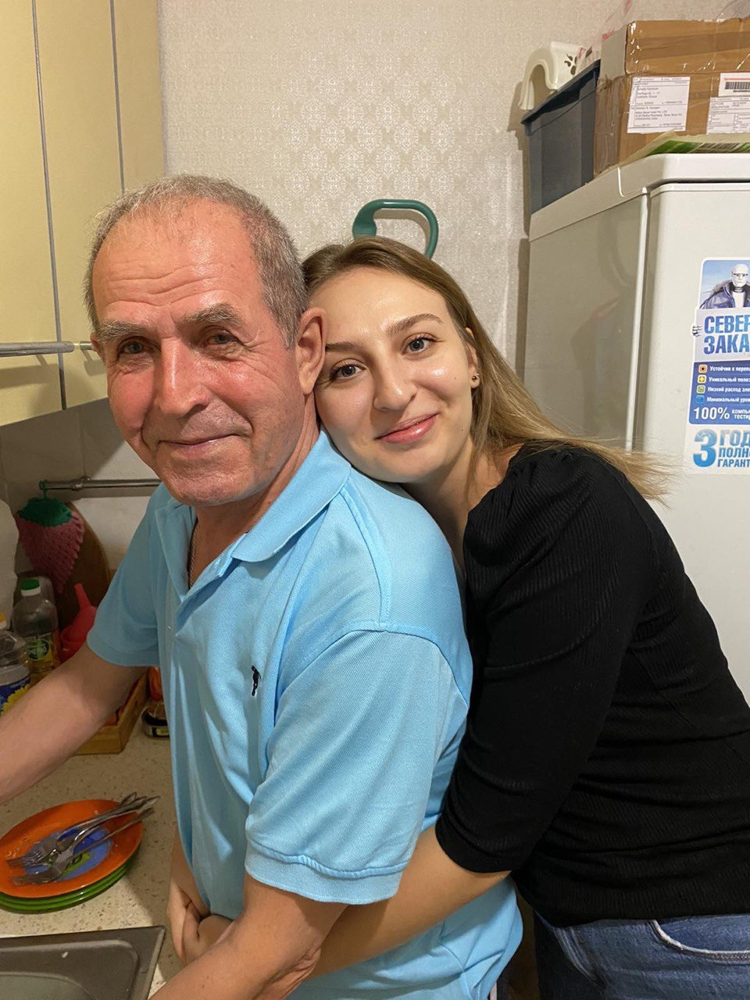

Мои родные и любимые бабушка и дедушка, поздравляю вас с Новым годом!
Желаю вам крепкого здоровья, жизненных сил, бодрости и много энергии.
Пусть ваши дни будут счастливыми, наполненными радостью, покоем и любовью.
Желаю долгих лет жизни. Ваша мудрость даёт на бесценные жизненные уроки, спасибо что делитесь ею с нами.
Будьте легки, задорны и никогда не унывайте. Пусть этот год принесёт вам много счастливых дней и радостных событий.